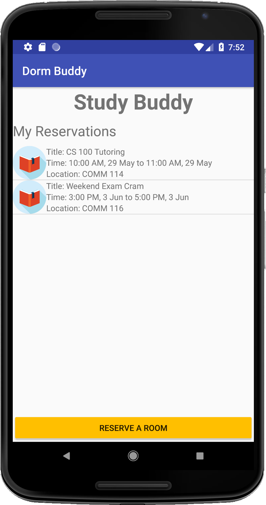
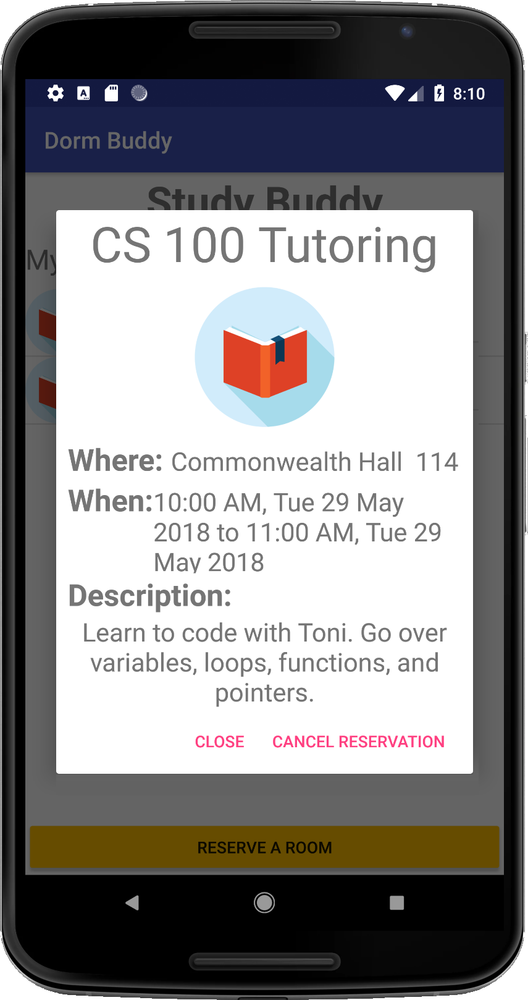
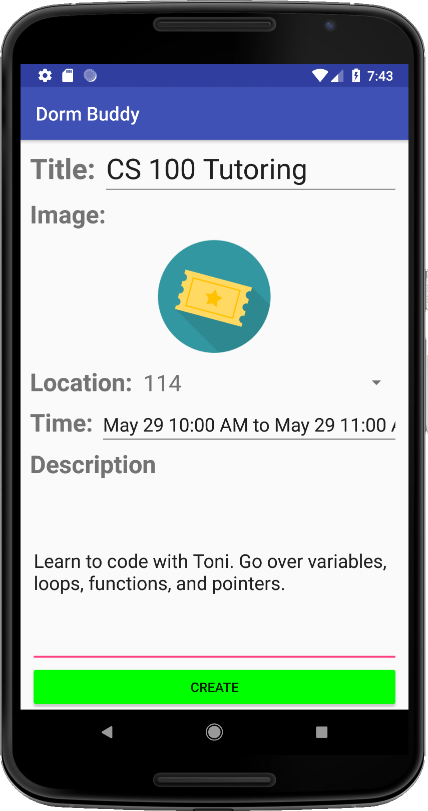

When Study Buddy is launched, a list of upcoming study room reservations
for the week show up. Those reservations have all been created by the user,
and the user can tap any one of them to view more details, or cancel it and
free up the room other residents.
Reservations
Any user can reserve a study room, and starting a reservation is just a tap
away. After tapping the "Reserve a room" button, the user is prompted to
fill out a form with reservation details. The inputs in the form are as
follows:
- Title - A brief overview of what the reservation is about.
-
Image - This is an optional icon users can upload and attach with their
reservation.
-
Location - Where the reservation will take place. Users must select a
room number from this drop down list of study rooms in the building.
-
Time - In here, users select a series of continuous 15-minute timeslots
that go with their reservation. Time slots selected by the user are
highlighted in green while those in which the room would be occupied
are highlighted in red. So, to avoid conflicts, red timeslots are not
selectable. Also, users can only reserve a maximum of 2 hours per day
-
Description - This is where users get creative. In this text area, users
are free to jot down notes regarding the topics they will cover during the
study session
After hitting the create button, the reservation can be seen in Study Buddy's
main screen. The timeslots associated with the reservation will be highlighted
in red for users who would try to reserve the same room

Reserve a room interface

Reservation time slots must be continuous

Slots reserved by others are red